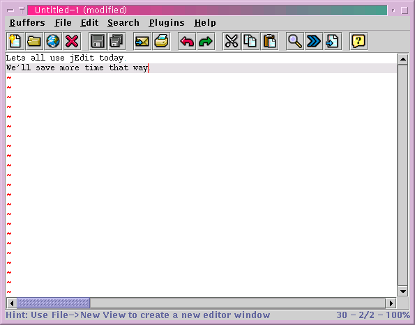
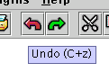

This chapter describes jEdit's basic file-related operations, such as opening, saving, printing, and so on.
Exactly how jEdit is started depends on your operating system; most often you would type "jedit" at the command line or double click on the jEdit icon (or select it from a menu, or whatever).
You can load up jEdit with a set of files by entering their names on the command line, or by dropping them onto the jEdit icon. If no files were given to jEdit, it will load any files that were open in the previous session; see the section called Saving and Loading Sessions in Chapter 5 for details.
Once started, jEdit will display a "splash screen" with the jEdit logo and a progress bar that advances while jEdit loads. After a short delay, the editor window will appear.
Figure 3-1. The editor window

The labels that run across the top of the editor window are called menus. Generally, File contains global file-related commands, Edit contains editing commands, and Utilities contains miscellaneous commands. Search and Macros contain commands for the respective jEdit features. Plugins contains menus and menu items created by plugins.
Pressing Alt in addition to an underlined character in the menu bar will display the respective menu. Once a menu is open, Alt in addition to an underlined character in a menu item label will invoke that menu item. While a menu is open, the arrow keys can be used to navigate the menu bar; Left Arrow and Right Arrow open the previous and next menu, respectively, and Up Arrow and Down Arrow move up and down in the currently open menu.
The strip of buttons underneath the menu bar is called the tool bar. Moving the mouse pointer over a button and holding it still will display a tooltip - a brief description of the button.
Figure 3-2. A tooltip

The text field labelled "Find" on the tool bar can be used to quickly search for a string without displaying the Search and Replace dialog box; see the section called Searching for Text in Chapter 8.
Tip: If you don't use the tool bar, disable it in the Utilities>Global Options dialog box to save memory and startup time (the images won't be loaded if it is disabled).
Most of the editor window is occupied by the text area. The text area displays the contents of the currently opened buffer. The two scroll bars can be used to move around the buffer when there is more text than can fit on the screen. The blinking red line is called the caret. Most text editing commands operate on the text at the caret.
Notice how the line with the caret is highlighted, and a faint blue dot appears at the end of each line. The current line highlighting aids in locating the caret, and the dot is an end of line marker.
The lines painted with red tildes ("~") are invalid lines - they are visible for one reason or another, but don't actually exist in the document.
The text area never allows the caret to be positioned on the first or last visible line. If It is moved closer than 3 lines to the top or bottom, the viewscreen will shift in the appropriate direction to make 3 lines above and below the caret visible. Having some "context" always visible helps when programming, for example. This feature is called electric scrolling.
Clicking the text area with the right mouse button will display a menu of frequently-used editing commands.
Tip: The behaviour of the text area can be customized in the Utilities>Global Options dialog box; see the section called The Global Options Dialog Box in Chapter 9.
The status area is at the bottom left of the editor window. It displays information in the following format:
col 42 line 7/10 70% |
The first number is the column position, or how far the caret is from the start of the line. The second pair of numbers is the current line, and the total number of lines in the buffer. The third number is the ratio of the current line to the total number of lines; ie, where the caret is positioned, relative to the size of the buffer.